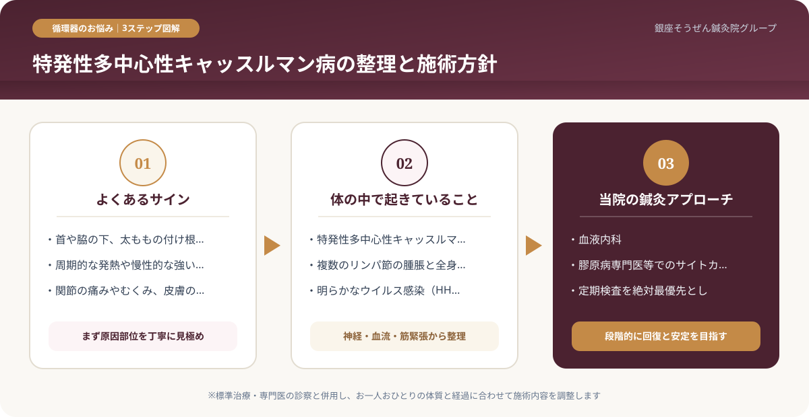

特発性多中心性キャッスルマン病の鍼灸
原因不明の慢性炎症と複数リンパ節の腫脹を特徴とする指定難病です。専門医の薬物治療と感染予防を最優先に、安定期の体調ケアを補完します。
まず知っておきたい要点と改善の流れ

特発性多中心性キャッスルマン病（iMCD）は、複数のリンパ節の腫脹と全身の慢性炎症を特徴とする希少な指定難病です。明らかなウイルス感染（HHV-8等）を伴わずに免疫系が異常活性化し、IL-6などの炎症性サイトカインが過剰産生されることが病態に深く関わると考えられています。発熱や倦怠感、貧血、肝脾腫、胸水・浮腫などが現れ、進行すると多臓器障害のリスクもあるため、専門医によるIL-6受容体阻害薬やステロイド等の治療が中心です。
このようなお悩みはありませんか？
- ✓首や脇の下、太ももの付け根などのリンパ節が腫れている
- ✓周期的な発熱や慢性的な強い疲れ・無気力感がある
- ✓関節の痛みやむくみ、皮膚の変化、貧血などが気になる
- ✓専門医の治療と定期検査を続けながら、安定期の疲労や緊張を和らげたい
当院の施術アプローチ・改善の流れ
なぜ鍼灸で改善へ向かうのか？（作用機序の図解）
特発性多中心性キャッスルマン病に対する鍼灸は、心拍変動・血管トーンを整える自律神経サポート機序を通じて、お体本来の回復力を引き出します。

循環器専門医の標準治療を絶対前提とし、手首や背部の安全な経穴へ低刺激でアプローチします。
心臓への過剰な交感神経刺激を穏やかに鎮め、心拍リズムと血管緊張の急変を抑えます。
ストレスで固まりやすい胸郭や横隔膜の緊張を解き、酸素摂取とリラックス反応を促します。
内服管理を厳守しながら、疲労やストレスが引き金となる症状不安の軽減を支えます。
院長YouTube解説・関連動画
複数のリンパ節に発症する、原因がわからないキャッスルマン病
特発性多中心性キャッスルマン病は、慢性のリンパ節の腫れや、慢性炎症が現れることが特徴の病気です。1956年に医師のベンジャミン・キャッスルマン先生が提唱した病気であるため、キャッスルマン病という名前がつきました。
特発性多中心性キャッスルマン病は、キャッスルマン病の中でも、複数のリンパ節に発症する、原因がわからないキャッスルマン病です。
以前、欧米ではHIVやHHV-8陽性者にキャッスルマン病を発症しているとの報告が多いことからウイルス感染と関係があるのではないかと考えられていました。
しかし、日本ではHIVやHHV-8陽性者がキャッスルマン病を発症しているケースは非常に少なく、現在では、日本だけでなく世界的にも少なくとも3分の１の人は他の要因によって発症していると考えられています。
特発性多中心性キャッスルマン病の原因は、わかっていない
特発性多中心性キャッスルマン病の原因は、わかっていません。
症状のほとんどは、体の中にある体温や発汗などをコントロールしている物質が過剰に生まれることで現れているということはわかっていますが、なぜ過剰に生まれるのかについてはわかっていないのです。
小児から老人まで幅広い層に発症しており、特に住んでいる地域や住んでいる環境、性別などによってに発症に差はないと思われます。
遺伝によって発症している人もいますが、非常に少なく、一般的には遺伝はしないと考えられています。
特発性多中心性キャッスルマン病（iMCD）は、リンパ系に影響を及ぼす非常にまれな病気で、リンパ節の過度な増殖が特徴となっています。病気の正確な原因は完全には明らかになっていませんが、以下にその潜在的な原因や関連要因について詳細に説明します。
特発性多中心性キャッスルマン病は、キャッスルマン病の中でも最も重篤な形態として知られています。キャッスルマン病自体は、リンパ節の過度な増殖とそれに伴う体内のさまざまな症状を引き起こす病気です。iMCDは全身に影響を及ぼすことが多いため、管理や改善が特に重要です。
原因と潜在的な要因：
サイトカインの過剰産生：iMCDでは、サイトカインと呼ばれる一連の炎症を引き起こすタンパク質を過剰に産生する傾向があります。特に、インターロイキン-6（IL-6）の過剰な産生は、病気の多くの症状の原因となると考えられています。
ウイルス感染：いくつかの研究では、特定のウイルス、特にヒトヘルペスウイルス8型（HHV-8）がiMCDの発症と関連している可能性が示唆されています。しかし、すべての場合でこの関連性が見られるわけではないため、他の原因も考えられます。
遺伝的要因：iMCDの発症に遺伝的要因が関与している可能性も考えられていますが、確固たる証拠はまだ少ないです。
免疫系の異常：iMCDの患者の免疫応答が異常であることが示唆されており、これが病気の発症や進行に関与している可能性があります。
環境要因：一部の研究者は、環境要因や生活習慣がiMCDのリスクを高める可能性があると考えていますが、これに関する具体的な証拠はまだ十分ではありません。
特発性多中心性キャッスルマン病の原因を正確に特定するのは難しく、多くの要因が絡み合っている可能性があります。現在のところ、サイトカインの過剰産生、特にIL-6の増加がiMCDの主要な病態として考えられています。
しかしながら、病気を発症している人の全てのに共通する単一の原因を特定するのは難しいため、継続的な研究が必要です。
症状は、慢性のリンパ節の腫れや慢性炎症
特発性多中心性キャッスルマン病の症状の特徴は、慢性のリンパ節の腫れや慢性炎症です。発熱や倦怠感、皮疹などの炎症が起こります。
しかし、特発性多中心性キャッスルマン病には特有の症状はありません。調べたとき、貧血や腎障害、多クローン性ガンマグロブリンの上昇、CRP陽性などがわかることもあります。
経過は数年に渡ります。改善を行わない場合は、倦怠感や発熱などの症状が続くことによって日常生活に問題が起きることもあります。
特発性多中心性キャッスルマン病は、リンパ系の異常な増殖を伴う病気で、多様な症状が出現することが知られています。
1. 一般的な症状:
発熱: 多くの場合は周期的な発熱を経験します。これは体温が通常の範囲よりも高くなることを指し、数時間から数日にわたって続くことがあります。
疲れや無気力: 慢性的な疲れや全身の無気力感が一般的です。これは日常生活の活動に対する意欲の低下や体力の低下をもたらすことがあります。
体重減少: 意図しない体重の減少や食欲不振が見られることがあります。
2. リンパ節の腫れ:
リンパ節の腫れは、iMCDの最も一般的な症状の一つです。首、脇の下、鼠径部（太ももの付け根近く）など、体のさまざまな部分にあるリンパ節が腫れることがあります。
3. 器官の影響:
肝臓や脾臓の腫れ: 肝臓や脾臓の腫大は一般的な症状であり、これに伴い黄疸や皮膚のかゆみが現れることがある。
肺: 肺に水がたまる（胸水貯留）や呼吸困難が生じることがあります。
腎臓: 腎不全や腎機能の低下の原因となることがあります。
4. 神経学的症状:
一部では神経学的な症状を示すことがあり、これには痺れ、麻痺、意識の変化、発作などが含まれます。
5. 皮膚の変化:
発疹、皮膚の紅潮、または紫斑（小さな出血点）などの皮膚の変化が見られることがあります。
6. その他の症状:
関節痛: 関節の痛みや腫れが発生することがあります。
視覚変化: 一部では視覚障害を経験することがあります。
液体の蓄積: 体の異なる部分、特に足や腹部に液体がたまることがあります。
7. 病状の進行:
病状が進行すると、多臓器不全のリスクが高まる可能性があります。これは心臓、肺、腎臓、肝臓などの主要な器官の機能が同時に低下する状態を指します。
特発性多中心性キャッスルマン病の症状は多様であり、個人ごとに異なる場合があります。
特発性多中心性キャッスルマン病の根本的な改善方法は今のところありません。
以前は、ステロイドや抗がん剤によって改善を行なっていましたが、症状のほとんどが体の中にある体温や発汗などをコントロールしている物質が過剰に生まれることで現れていることがわかってからは、トシリズマブによって改善を行なっています。
トシリズマブを使うことでほとんどの症状は軽くなったりなくなったりしますが、あくまでも症状を軽くするための改善方法のため、通常は2週間ごとに反復して投与することが必要になります。
特発性多中心性キャッスルマン病（iMCD）は、リンパ系の異常増殖を伴う希少な病気です。改善方法は病状の重症度、合併症の存在、および般的な健康状態に応じて変化します。
1. 免疫調節薬物:
iMCDは免疫系の異常な活性化に関連していると考えられているため、免疫応答を抑制または調節する薬物が改善の中心となることが多いです。
ステロイド: プレドニゾロンなどのステロイドは、炎症を抑えることで症状を和らげる効果があります。急性の症状発現時や病状の悪化時に使用されることが多いです。
リトキシマブ: これはB細胞を標的とするモノクローナル抗体であり、B細胞の数を減少させることで免疫応答を調節します。
シロリムス: シロリムスはmTOR阻害薬であり、細胞の成長と免疫応答を抑制する効果があります。
2. サイトカイン阻害薬:
サイトカインは免疫応答を調節するための体内のタンパク質です。iMCDでは、サイトカインの過剰な生産が症状の一因となると考えられています。
トシリズマブ: IL-6受容体を標的とするこの抗体は、IL-6の活性化を阻害し、炎症反応を減少させます。
3. 化学法:
進行性のiMCDに対しては、ガンの改善に用いられる化学法が適用されることがあります。
エトポシド、シクロフォスファミド、ドキソルビシン: これらの薬物は、リンパ系の細胞を標的とし、細胞の成長や増殖を抑制します。
4. 移植:
重症の場合や他の方法が効果を示さない場合には、骨髄移植が選択肢として考慮されることがあります。
5. 支持法:
症状を緩和するためのサポートも重要です。
疼痛管理: 鎮痛薬が痛みの緩和のために用いられます。
栄養補給: 健康状態を維持するための食事指導や栄養補助食品が推奨されることがあります。
6. 臨床試験:
新しい改善法の可能性を探るための臨床試験も行われており、適切な場合はこれらの試験への参加を検討することができます。
特発性多中心性キャッスルマン病の改善方法は、病状や体調に応じて異なります。
特発性多中心性キャッスルマン病（iMCD）は、体のリンパ節の異常な増殖を特徴とする稀な病気です。iMCDの病態と直接的に関連する食事法は、特定されていない可能性が高いです。
しかし、一般的にiMCDの場合の健康をサポートするための食事指導や、関連する合併症や薬の副作用を緩和する食事のアドバイスが提供されることがあります。以下にiMCDの場合に行う可能性のある食事指導のポイントを説明します。
栄養バランスの取れた食事：全般的な健康をサポートするため、バランスの良い食事が推奨されます。たんぱく質、健康的な脂肪、ビタミン、ミネラル、繊維を含む食品の摂取を心がけることが重要です。
鉄分の摂取：iMCDでは、貧血のリスクが高まることがあります。鉄分を豊富に含む食品（例：赤肉、鶏肉、魚、豆類、緑黄色野菜、全粒穀物）を摂取することで、貧血の予防や改善をサポートできます。
骨密度の維持：ステロイドでの改善を受けている場合は、骨折のリスクが高まる可能性があります。カルシウムとビタミンDを豊富に含む食品を摂取することで、骨の健康をサポートします。
水分摂取：脱水を避けるために、十分な水分摂取が重要です。特に炎症や発熱が伴う場合、適切な水分補給を心がけることが推奨されます。
アルコールやカフェインの摂取を控える：これらの物質は、一部では症状を悪化させる可能性があります。
食事のタイミング：薬物の副作用や症状によって、食事の摂取が困難になることがあります。その場合、小さな食事を一日に複数回摂取することがおすすめされることがあります。
食品の選び方：加工食品や高脂肪、高糖質の食品は控え、新鮮な野菜や果物、全粒穀物などの自然な食品を中心にすることが良いとされています。
iMCDの改善方法や病状に応じて、上記のアドバイスが変わる可能性があります。したがって、医師や栄養士と継続的に相談することが最も重要です。
症状が非常に軽く、特に改善を行う必要がない場合は、問題なく日常生活を送ることができます。しかし、感染症などには注意が必要です。手洗いうがいを心がけ、インフルエンザや細菌への感染に注意して生活しましょう。
改善のためにステロイドやトシリズマブを使っている場合、肺炎などが起こったとき、高熱などのわかりやすい症状が出ないまま悪口なってしまうことがあります。咳など他の症状がないか自分の体調を常に気にかけることが大事です。
循環器・動悸・高血圧・心不全補助の全身ツボ図解
実際の施術ではお一人おひとりの体質・症状に合わせて選穴しますが、動悸・不整脈・本態性高血圧・慢性心不全の循環器治療併用サポートの臨床でよく用いられる代表的なツボの目安です。

📌 代表的なツボの詳細一覧表を開く（6穴） ▼
| ツボ名 | 位置の目安 | 主な狙い | セルフケアの注意点 |
|---|---|---|---|
| 内関（ないかん） | 手首の横ジワから指3本分肘寄りの中央 | 動悸・不整脈・狭心症補助で最も研究されている心包経の要穴 | 胸痛・冷や汗・失神がある場合は直ちに救急受診してください。 |
| 膻中（だんちゅう） | 胸の中央（胸骨上） | 胸のつかえ・交感神経の高ぶり・不安感の鎮静 | 強く押さず手のひらで温めながら深呼吸します。 |
| 神門（しんもん） | 手首の横ジワの小指側のくぼみ | 心拍の落ち着き・緊張性の動悸と不眠ケア | ペースメーカー使用時は電気鍼を避け手技のみで行います。 |
| 曲池（きょくち） | 肘を曲げた外側のシワの先端 | 血圧変動に伴う上肢・頭部の緊張緩和 | 降圧薬・心不全薬の自己判断での中止は厳禁です。 |
| 足三里（あしさんり） | 膝の下外側、指4本分下 | 末梢循環・自律神経バランスとQOL維持 | 身体負担の少ない穏やかな低刺激で行います。 |
| 太衝（たいしょう） | 足の甲、親指と人差し指の骨の間 | ストレス性の血圧上昇・末梢血管収縮の緩和 | 就寝前の優しい指圧でリラックスを促します。 |
国際査読論文の科学的エビデンス
国際的な医学データベース（PubMed・Cochrane等）で報告されている動悸・不整脈・本態性高血圧・慢性心不全の循環器治療併用サポート領域の代表的な査読済み鍼灸研究をまとめています（標準治療との併用や研究上の限界を含めて正確に掲載）。
📚 査読論文データ・PubMed出典リンクを開く（4件） ▼
| 年・研究デザイン | 対象・規模 | 主な結果 | 限界・出典 |
|---|---|---|---|
| 2019年 大規模多施設RCT | 慢性安定狭心症 398名解析（標準薬物療法併用） | 16週時点の4週間発作減少は実鍼群がシャム群比5.18回・待機群比5.63回多く有意改善（P<0.001）。 | 標準薬物療法への併用（補完）試験であり単独療法ではない。 JAMA Intern Med (PMID: 31355870) |
| 2007年 シャム対照RCT | 本態性高血圧 140名完了（ドイツ・24時間ABPM） | 治療終了時の24時間血圧はシャム比SBP -6.4mmHg・DBP -3.7mmHg有意低下（P<0.001）。 | 終了3〜6か月で治療前水準へ戻るため継続ケアが必要。 Circulation (PMID: 17548730) |
| 2015年 メタ解析 | 高血圧 23 RCTs（n=1,788） | 降圧薬＋実鍼は降圧薬＋シャム比でSBP -7.47mmHg・DBP -4.22mmHg有意低下。鍼単独は降圧薬と同等・根拠不十分。 | 盲検化・異質性に課題。降圧薬の自己中断は厳禁。 PLoS One (PMID: 26207806) |
| 2025年 メタ解析 | 心拍変動（HRV）10 RCTs（n=744） | 自律神経全体の適応指標SDNNを有意に改善、重篤な有害事象なし。 | LF・HFには不確実性が高くさらなる検証が必要。 Front Neurosci (PMID: 41230507) |
参考文献・出典
- 2019年 大規模多施設RCT（慢性安定狭心症 398名解析（標準薬物療法併用））— JAMA Intern Med (PMID: 31355870)
- 2007年 シャム対照RCT（本態性高血圧 140名完了（ドイツ・24時間ABPM））— Circulation (PMID: 17548730)
- 2015年 メタ解析（高血圧 23 RCTs（n=1,788））— PLoS One (PMID: 26207806)
- 2025年 メタ解析（心拍変動（HRV）10 RCTs（n=744））— Front Neurosci (PMID: 41230507)
よくある質問（FAQ）
Q. リンパ節が腫れている部分や発熱があるときに鍼灸を受けてもよいですか？▼
Q. 治療で落ち着いている時期に、慢性的な疲れや肩こりのケアは相談できますか？▼
あわせて読まれる関連疾患（循環器のお悩み）
先天的な酵素異常で有害なイソ吉草酸が蓄積する希少な代謝異常症です。専門医での食事管理・早期点滴を最優先とし、安定期の体調を穏やかに支えます。
好酸球の異常増加により全身の細い血管に炎症が生じる指定難病です。専門医の長期治療を最優先とし、寛解・安定期のしびれや緊張を穏やかにケアします。
腎臓や肺・神経などの小型血管に炎症が起こる指定難病です。ステロイド・免疫抑制治療を最優先とし、寛解・安定期の体調管理を補完的に支えます。
電子伝達フラビン蛋白の異常で脂肪酸代謝が障害される指定難病です。食事間隔の厳守と専門医管理が最優先で、安定期の筋疲労等を穏やかにケアします。
特定のアミノ酸代謝酵素の異常により中枢神経障害を起こす指定難病です。専門医の食事・薬物管理が最優先で、安定期の筋緊張等を穏やかにケアします。
先天的な代謝酵素異常でメチルマロン酸が蓄積する指定難病です。専門医の食事・薬物管理を最優先に、安定期の穏やかな体調ケアを行います。
CLINICAL RECOVERY CASES
✨ 実際の臨床改善事例・回復経過を見る
銀座本院をはじめ各院での実際の改善事例を症状別に絞り込んでご確認いただけます。
おひとりで悩まず、まずはご相談ください
銀座本院・川口・大宮・横浜・博多・田無の各院でご予約を承っております。